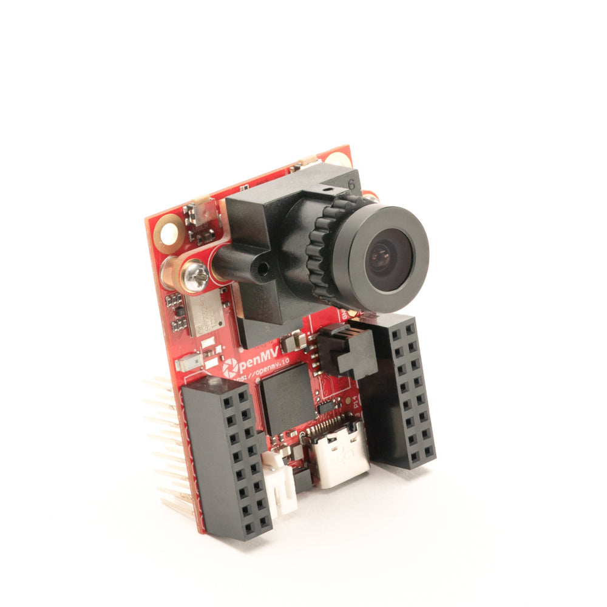
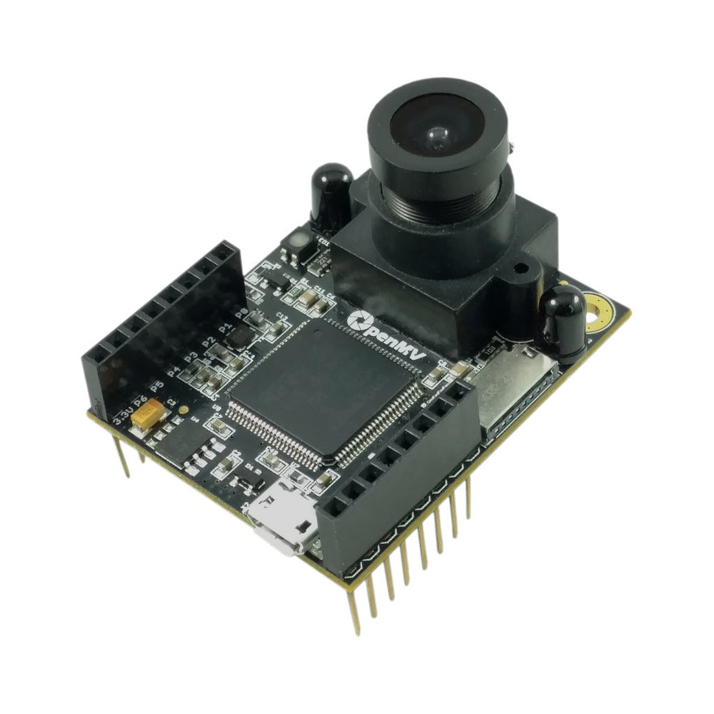
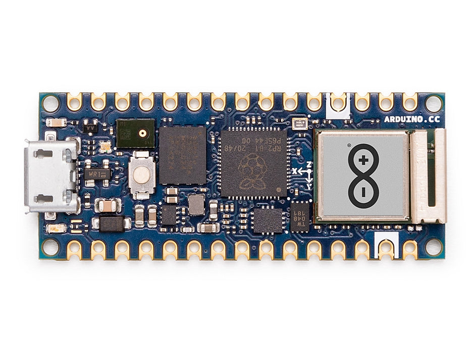

Placas OpenMV¶
Câmaras OpenMV e placas Arduino com firmware OpenMV. Cada página apresenta o diagrama de pinos completo, mapeamento de periféricos, controladores suportados e notas específicas da placa.
Câmaras OpenMV¶

OpenMV N6 Novo
STM32N6 com NPU integrada — o primeiro MCU com aceleração de IA da STMicro.
Explorar →
OpenMV AE3 Novo
Alif Ensemble E3 — Cortex-M55 de classe fusion com NPU Ethos-U55.
Explorar →
OpenMV RT1062
NXP i.MX RT1062 Cortex-M7 a 600 MHz com 32 MB de SDRAM externa.
Explorar →
Pure Thermal
Imagem a cores e térmica, saída DVI/HDMI, LCD táctil integrado e anfitrião STM32H7.
Explorar →
OpenMV H7 Plus
STM32H743 com 32 MB de SDRAM externa e sensor OV5640 de 5 MP.
Explorar →
OpenMV H7
STM32H743 Cortex-M7 com módulo de sensor de imagem amovível.
Explorar →
OpenMV M7 Legado
STM32F765 Cortex-M7 — sucessor do M4 com mais memória e velocidade.
Explorar →
OpenMV M4 Legado
STM32F427 Cortex-M4 — a primeira OpenMV Cam.
Explorar →Placas Arduino¶

Arduino Nicla Vision
Placa STM32H747 compacta de 23 × 23 mm com sensor integrado.
Explorar →
Arduino Portenta
STM32H747 com 8 MB de SDRAM e suporte para Vision Shield.
Explorar →
Arduino Giga
STM32H747 com 8 MB de SDRAM e suporte para Vision e Display Shield.
Explorar →
Arduino Nano RP2040 Connect Não suportado
RP2040 Cortex-M0+ com Wi-Fi/BLE U-blox NINA.
Explorar →
Arduino Nano 33 BLE Sense Não suportado
Placa de sensores Nordic nRF52840 — sem sensor de imagem integrado.
Explorar →